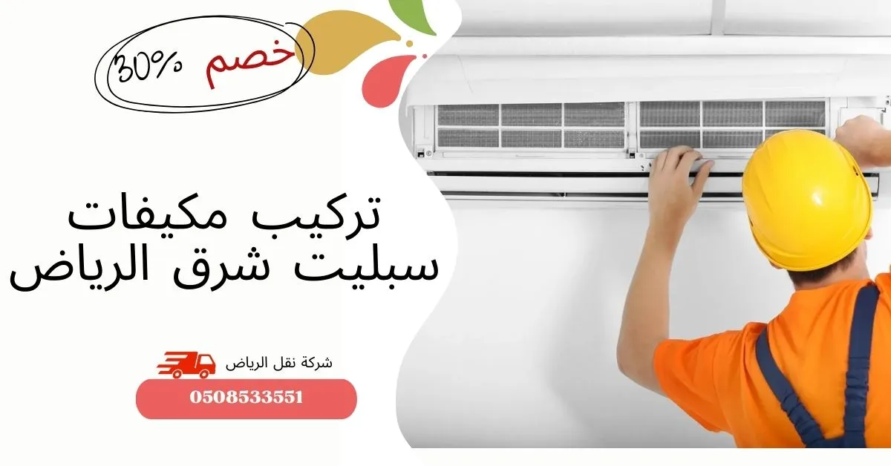

تركيب مكيفات سبليت شرق الرياض

تعتبر شركة نقل الرياض واحدة من الشركات الرائدة في مجال تركيب مكيفات سبليت شرق الرياض، حيث تقدم مجموعة متنوعة من الخدمات التي تلبي احتياجات العملاء بشكل شامل، وتتخصص الشركة في تركيب مكيفات سبليت شرق الرياض مما يجعلها الخيار الأول للكثير من السكان في هذه المنطقة، وتتميز الشركة بفريق من الفنيين المدربين تدريباً عالياً والذين يستخدمون أحدث التقنيات لضمان تركيب فعال ومتقن، ومع التركيز على الجودة والموثوقية تسعى شركة الفراعنة لتقديم أفضل الحلول لعملائها لضمان راحتهم ورضاهم.
شركة تركيب مكيفات سبليت بالرياض
تقدم شركة نقل الرياض خدمات تركيب مكيفات سبليت شرق الرياض بشكل احترافي وعالي الجودة، وتشمل هذه الخدمات:
استشارة مجانية
تقدم الشركة استشارات مجانية للعملاء لتحديد أفضل الحلول لمتطلباتهم، ويتضمن ذلك تحليل مساحات الغرف واختيار المكيف الأنسب وفقاً للاحتياجات الفردية مما يضمن حصول العميل على أفضل تجربة ممكنة.
اختيار المكيف
تساعد العملاء في اختيار نوع المكيف المناسب بناءً على مساحة الغرفة واحتياجات التبريد، ويتوفر لدى الشركة مجموعة واسعة من المكيفات من مختلف العلامات التجارية مما يتيح للعملاء اختيار الأفضل وفقًا لميزانيتهم.
خدمة التركيب
يتم تركيب المكيفات بواسطة فنيين متخصصين لضمان الجودة والسلامة، ويستخدم الفنيون أحدث الأدوات والتقنيات لضمان تركيبات دقيقة وفعالة مما يقلل من فرص حدوث أي مشكلات مستقبلية.
الصيانة الدورية
توفر الشركة خدمات صيانة دورية للمكيفات لضمان عملها بكفاءة، وتشمل هذه الخدمات تنظيف الفلاتر، التحقق من مستويات الفريون وفحص المكونات الأساسية للمكيف لضمان أدائها الأمثل.
الضمان شامل
تقدم ضمانات شاملة على جميع خدمات التركيب مما يمنح العملاء الثقة في جودة الخدمة المقدمة، كما تتيح لهم إمكانية الاستفادة من الدعم الفني والصيانة المجانية وتنظيف المكيفات ضمن فترة الضمان.
فني تركيب مكيفات سبليت
يعتبر الفنيون في شركة نقل الرياض هم العمود الفقري لنجاح خدمات تركيب مكيفات سبليت شرق الرياض، ويتميزون بـ:
التدريب الاحترافي
كل فني حاصل على تدريب متخصص في تركيب مكيفات سبليت، ويتضمن ذلك التدريب على أحدث التقنيات والطرق المثلى لضمان جودة التركيب.
الخبرة الواسعة
يمتلكون سنوات من الخبرة في تركيب المكيفات في مختلف الظروف، وتم تدريب هؤلاء الفنيين على التعامل مع تحديات مختلفة مما يضمن قدرتهم على تلبية احتياجات العملاء بكفاءة.
التقنيات الحديثة
يستخدمون أحدث الأدوات والتقنيات لضمان تركيب آمن وفعال، وتشمل هذه الأدوات أجهزة قياس دقيقة وأدوات خاصة لتركيب المكيفات بشكل صحيح.
التواصل الجيد
يحرصون على التواصل مع العملاء لفهم احتياجاتهم وتلبية توقعاتهم، ويقوم الفنيون بشرح خطوات التركيب والإجابة عن أي استفسارات قد تكون لدى العميل مما يعزز من ثقة العملاء في الخدمة المقدمة.
الالتزام بالمواعيد
يلتزم الفنيون بالمواعيد المحددة للتركيب لضمان رضا العملاء، ويقومون بالوصول إلى مواقع العمل في الوقت المحدد ويعملون بكفاءة لإنهاء التركيب في الوقت المتفق عليه.
تركيب مكيفات بالرياض
تقدم شركة نقل الرياض خدمات تركيب مكيفات سبليت شرق الرياض، مع التركيز على:
- التقييم المسبق: يقوم فريق العمل بتقييم الموقع قبل التركيب لتحديد أفضل الخيارات، ويتضمن ذلك قياس المساحات والتأكد من توافر التوصيلات الكهربائية اللازمة.
- توفير الوقت: تسعى الشركة لإنهاء عمليات التركيب في أسرع وقت ممكن دون المساس بالجودة، ويتم تجهيز كافة المعدات والأدوات مسبقًا لتقليل الوقت المستغرق في التركيب.
- تركيب آمن: يتم التركيب وفقاً للمعايير والمواصفات اللازمة لضمان الأمان، وهي تستخدم تقنيات حديثة لضمان عدم وجود أي تسريبات أو مشاكل أثناء وبعد التركيب.
- التعامل مع جميع الأنواع: تشمل خدمات التركيب جميع أنواع مكيفات السبليت سواء كانت مكيفات تعمل بالتيار المتردد أو المكيفات المركزية، ويتمتع الفريق بخبرة واسعة في التعامل مع مختلف الأنواع.
- التكلفة التنافسية: تقدم الشركة أسعاراً تنافسية وخيارات دفع مرنة، وتسعى شركة نقل الرياض لتلبية ميزانيات العملاء من خلال تقديم عروض خاصة وخدمات إضافية.
تركيب مكيفات سبليت شمال الرياض
تتخصص شركة نقل الرياض في تركيب مكيفات سبليت شرق الرياض، حيث تقدم:
- تقديم العروض: تقدم الشركة عروضاً خاصة للعملاء في المنطقة مما يساعد على جذب المزيد من العملاء، وتتضمن هذه العروض خصومات على خدمات التركيب أو صيانة مجانية لفترة محددة.
- فنيون متخصصون: جميع الفنيين لديهم خبرة في التعامل مع الظروف المناخية الخاصة بالشمال مما يضمن توفير أفضل الحلول، ويعرف الفنيون كيفية التعامل مع درجات الحرارة المختلفة والتحديات المرتبطة بها.
- خدمة ما بعد البيع: توفر دعم فني وخدمات صيانة بعد التركيب، ويتواجد الفريق على مدار الساعة لتلبية احتياجات العملاء والاستجابة لأي طارئ قد يحدث.
- تقييم الأداء: يتم تقييم أداء المكيفات بعد التركيب لضمان الكفاءة، ويتضمن ذلك مراجعة فاعلية التبريد والتأكد من عدم وجود أي مشاكل.
- توصيل سريع: تضمن الشركة توصيل المكيفات إلى المواقع المحددة بسرعة وكفاءة مما يسهل على العملاء الحصول على خدماتهم في الوقت المناسب.
فني تركيب مكيفات فلبيني
تُعرف شركة نقل الرياض بتوظيف فنيين لخدمات تركيب مكيفات سبليت شرق الرياض الجنسية الفلبينية، حيث يتمتع هؤلاء الفنيون بـ:
مهارات عالية
الفلبينيون مشهورون بمهاراتهم العالية في التركيب. يتلقون تدريباً شاملاً يمكنهم من التعامل مع أي تحديات قد تواجههم أثناء التركيب.
الجودة الاحترافية
تتمتع الفنيون بسمعة قوية في تقديم خدمات احترافية، حيث يلتزمون بأعلى معايير الجودة، ويتعاملون مع العملاء بلطف واحترام، مما يعزز من سمعة الشركة.
التواصل الفعال
يتحدثون اللغة العربية والإنجليزية مما يسهل التواصل مع العملاء، ويساعد هذا في فهم احتياجات العملاء بشكل أفضل وتقديم الخدمات بشكل أكثر فعالية.
الالتزام بالمواعيد
يلتزم الفنيون بمواعيد العمل المحددة مما يزيد من ثقة العملاء في خدمات الشركة، ويقومون بتقديم تقارير مفصلة عن الأعمال المنجزة.
الاهتمام بالتفاصيل
يقومون بعملهم بدقة لضمان تركيب متقن، وبحرص الفنيون على فحص جميع المكونات والتأكد من أنها تعمل بشكل سليم.
تركيب مكيفات سبليت شرق الرياض
تتميز شركة نقل الرياض بخدماتها في تركيب مكيفات سبليت شرق الرياض، حيث تقدم:
- تحديد الاحتياجات: يتم تحديد احتياجات العميل بشكل دقيق لتقديم الخدمة المناسبة، وتشمل هذه العملية استشارة تفصيلية حول الأنواع المفضلة والمواصفات المطلوبة.
- تركيب احترافي: يتم التركيب وفقاً لأعلى المعايير، مما يضمن أداءً ممتازًا للمكيفات، ويتم استخدام مواد عالية الجودة لضمان سلامة التركيب.
- توفير قطع الغيار: توفر الشركة قطع غيار أصلية لضمان عمل المكيفات بكفاءة، كما يتم استخدام قطع الغيار من المصدرين المعتمدين لضمان جودتها.
- دعم فني مستمر: توفر الشركة دعمًا فنيًا على مدار الساعة، مما يتيح للعملاء الحصول على المساعدة في أي وقت، ويتمتع الفنيون بالقدرة على حل أي مشاكل قد تطرأ بسرعة وكفاءة.
- استجابة سريعة: تضمن الشركة استجابة سريعة لطلبات التركيب والصيانة مما يجعلها الخيار المفضل للعملاء في شرق الرياض، ويقوم الفريق بالاستجابة لأي استفسار أو طلب في أقصر وقت ممكن.
تساهم شركة نقل الرياض بشكل كبير في تحسين تجربة العملاء من خلال خدماتها المتميزة في تركيب مكيفات سبليت شرق الرياض وغيرها من المناطق.
الأسئلة الشائعة حول تركيب مكيفات سبليت شرق الرياض
ما هي أنواع مكيفات السبليت المتوفرة؟
تتوفر العديد من أنواع مكيفات السبليت وتختلف في السعة والكفاءة والمزايا الإضافية، ومنها مكيفات إنفرتر الموفرة للطاقة ومكيفات ذات تقنيات متقدمة للتحكم في درجة الحرارة والرطوبة، وينصح بالاستشارة مع شركة متخصصة لتحديد الأنسب لاحتياجاتك.
كم تبلغ تكلفة تركيب مكيف سبليت؟
تختلف تكلفة التركيب حسب نوع المكيف، وسعته وموقع التركيب بالإضافة إلى الخدمات الإضافية المطلوبة، وينصح بالحصول على عروض أسعار من عدة شركات قبل اتخاذ القرار.
ما هي فترة الضمان على تركيب المكيف؟
تختلف فترة الضمان من شركة لأخرى وعادة ما تشمل فترة ضمان على التركيب وأخرى على قطع الغيار، ويُنصح بالاطلاع على تفاصيل الضمان قبل التعاقد.
كم تستغرق عملية تركيب مكيف السبليت؟
تستغرق عملية التركيب عادةً بضع ساعات وقد تختلف المدة حسب حجم المكيف وتعقيد عملية التركيب.
هل تتولى الشركة توفير قطع الغيار؟
تختلف السياسات بين الشركات لكن غالبًا ما تتولى الشركات الموثوقة توفير قطع الغيار الأصلية في حالة حدوث أعطال.
ما هي أهمية الصيانة الدورية لمكيفات السبليت؟
الصيانة الدورية ضرورية للحفاظ على كفاءة المكيف وإطالة عمره الافتراضي وتجنب الأعطال المكلفة، وتتضمن الصيانة تنظيف الوحدات الداخلية والخارجية وفحص الوصلات الكهربائية وتغيير الفلاتر.